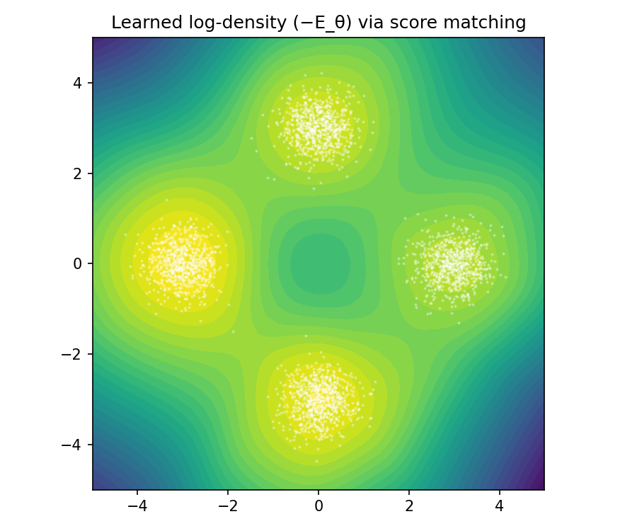

Score Matching
Score Matching
Score matching (Hyvärinen, 2005) is a method for training unnormalized probabilistic models (EBMs) without computing the partition function \(Z\). Instead of learning the density \(p_\theta(x)\) , it learns the score function — the gradient of the log-density:
\[ s_\theta(x) = \nabla_x \log p_\theta(x) \]
The key insight: the score does not depend on \(Z\) because \(\nabla_x \log Z = 0\) (it's a constant w.r.t. \(x\) ).
Why the Score Avoids \(Z\)
For an EBM \(p_\theta(x) = e^{-E_\theta(x)} / Z_\theta\) :
\[ \log p_\theta(x) = -E_\theta(x) - \log Z_\theta \] \[ s_\theta(x) = \nabla_x \log p_\theta(x) = -\nabla_x E_\theta(x) \]
The \(\log Z\) term vanishes under the gradient w.r.t. \(x\) . So we can compute the model's score without ever knowing \(Z\) .
The Score Matching Objective
Match the model score to the data score:
\[ J(\theta) = \frac{1}{2} \mathbb{E}_{x \sim p_{\text{data}}}\left[\| s_\theta(x) - \nabla_x \log p_{\text{data}}(x) \|^2\right] \]
Problem: we don't know \(\nabla_x \log p_{\text{data}}(x)\) either!
Hyvärinen's Trick: Integration by Parts
Using integration by parts (under mild boundary conditions), the objective can be rewritten without needing \(\nabla_x \log p_{\text{data}}\):
\[ J(\theta) = \mathbb{E}_{x \sim p_{\text{data}}}\left[\frac{1}{2}\|s_\theta(x)\|^2 + \text{tr}(\nabla_x s_\theta(x))\right] + \text{const} \]
Expanding:
\[ J(\theta) = \mathbb{E}_{x \sim p_{\text{data}}}\left[\sum_i \frac{1}{2} s_{\theta,i}(x)^2 + \frac{\partial s_{\theta,i}(x)}{\partial x_i}\right] \]
This only requires:
- The model score \(s_\theta(x)\) — easy
- The diagonal of the Jacobian \(\partial s_{\theta,i} / \partial x_i\) — the expensive part
Intuition:
- The first term is to push down the gradient of the log-density, at the data.
- The second term is Laplacian of log density, which is average curvature of the log-density surface. By pushing it down, we make the model concave down near a mode of the data.
Implementation
import torch import torch.nn as nn def score_matching_loss(energy_fn, x): """ Compute the score matching loss (Eq. 4 in Hyvärinen 2005). J(θ) = (1/N) Σ_i [ ½||s_θ(x_i)||² + tr(∇_x s_θ(x_i)) ] where s_θ(x) = -∇_x E_θ(x) (score = negative gradient of energy). Args: energy_fn: callable mapping x -> scalar energy E(x) x: data samples [batch_size, dim] Returns: scalar loss """ x = x.requires_grad_(True) energy = energy_fn(x) # score = -∇_x E(x) = ∇_x log p(x) (since log p = -E - log Z) score = -torch.autograd.grad( energy.sum(), x, create_graph=True )[0] # ½||s_θ(x)||² sq_norm = 0.5 * (score ** 2).sum(dim=1) # tr(∇_x s_θ(x)) = Σ_i ∂s_i/∂x_i trace = torch.zeros(x.shape[0], device=x.device) for i in range(x.shape[1]): trace += torch.autograd.grad( score[:, i].sum(), x, create_graph=True )[0][:, i] return (sq_norm + trace).mean()
def example_neural_ebm(): """ Train a neural network E_θ(x) as an energy function on 2D data sampled from a mixture of Gaussians. Score matching learns the energy landscape without needing the partition function. """ print("=" * 60) print("Example 2: Neural energy-based model via score matching") print("=" * 60) torch.manual_seed(0) # Generate 2D mixture of Gaussians data n = 3000 k = torch.randint(0, 4, (n,)) angles = k.float() * (3.14159 / 2) centers = 3.0 * torch.stack([angles.cos(), angles.sin()], dim=1) data = centers + 0.4 * torch.randn(n, 2) # Simple MLP energy function # My Note: energy function is learned from data by score matching! model = nn.Sequential( nn.Linear(2, 64), nn.SiLU(), nn.Linear(64, 64), nn.SiLU(), nn.Linear(64, 1), ) def energy_fn(x): return model(x).squeeze(-1) optimizer = torch.optim.Adam(model.parameters(), lr=1e-3) for step in range(3000): idx = torch.randint(0, len(data), (256,)) loss = score_matching_loss(energy_fn, data[idx]) optimizer.zero_grad() loss.backward() optimizer.step() if (step + 1) % 1000 == 0: print(f" Step {step+1:4d} | Loss: {loss.item():.4f}") # Evaluate learned energy on a grid import matplotlib.pyplot as plt with torch.no_grad(): grid = torch.linspace(-5, 5, 50) xx, yy = torch.meshgrid(grid, grid, indexing="ij") pts = torch.stack([xx.flatten(), yy.flatten()], dim=1) energies = energy_fn(pts).reshape(50, 50) fig, ax = plt.subplots(figsize=(6, 5)) ax.contourf(xx.numpy(), yy.numpy(), -energies.numpy(), levels=30, cmap="viridis") ax.scatter(data[:, 0].numpy(), data[:, 1].numpy(), s=1, c="white", alpha=0.3) ax.set_title("Learned log-density (−E_θ) via score matching") ax.set_aspect("equal") plt.tight_layout() plt.savefig("score_matching_energy.png", dpi=150) plt.close() print(" Plot saved: score_matching_energy.png")
example_neural_ebm()
============================================================ Example 2: Neural energy-based model via score matching ============================================================ Step 1000 | Loss: -6.3228 Step 2000 | Loss: -6.1215 Step 3000 | Loss: -7.4282 Plot saved: score_matching_energy.png

Key References
- Hyvärinen (2005): "Estimation of Non-Normalized Statistical Models by Score Matching" — https://jmlr.org/papers/v6/hyvarinen05a.html